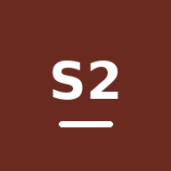
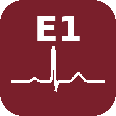
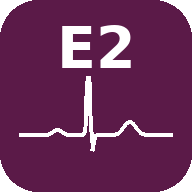

Cardiology · P12Shock II — fixing it28 cards in 6 sections: the drugs by receptor, the order, the special hearts, the trials, and the machines. Walk the packet, or open one card. Specials · SPECIAL05A/05BTrauma — polytrauma, bleeding and blood16 concepts, all 24 cards and 13 top-ups, with open notes, a Recall switch with hand-picked blanks, and tap-to-reveal cards with a miss list.
Cardiology · P12 · EC1ECG I — the wiring, the waves, the camerasThe ECG basics, built once: 27 cards in 5 sections, each with its pictures side by side, memory hooks and the traps NEET sets, then six closing traps and 25 closing questions.
Cardiology · P12 · EC2ECG II — blocks, short circuits, drugs and what changes the waves43 cards in 7 sections: the five blocks on one strip, the electrolyte beats side by side, rhythms, antiarrhythmics, the QT and poisons, each with memory hooks and the traps NEET sets, then six closing traps and 33 closing questions. GIPancreatitis, gut, mesenteric ischaemia, abdominal pressure14 concepts in 4 groups, with disease maps, pattern drills and the Mimics, Traps, Cards and Asked tabs. EndocrineThyroid — labs, storm, myxoedema coma3 concepts with the axis map and the pattern drill. The other endocrine groups are still to come. ObstetricsObstetric critical careConcepts grouped by deck, with mimic pairs, traps by percentage right, and past questions.Keeping it on the tablet.
- Tap Add to home screen above, or use Chrome’s menu.
- Each page is updated here, so opening it with internet picks up the newest version by itself.
- Pages you have opened once work offline.
- Your ticks, miss lists and S Pen marks are kept on this tablet, in this browser.
- Tap the pen button on any page to write and highlight with the S Pen; fingers still scroll.